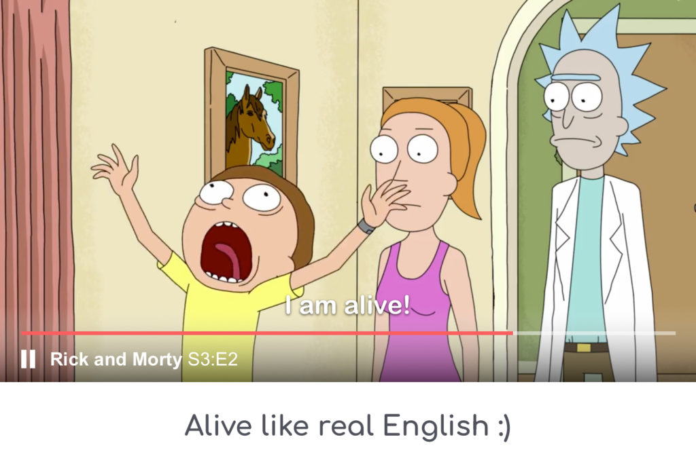

(services for watching films in english)
AUDIO LESSONS WITH REAL-LIFE ENGLISH VOCABULARY

The purpose of EasyLang is watching films in
English.
The sense is that you can replay a phrase a lot of times and listen in
details. You also can manage the filter by steps using
subtitles.
Services for translation and a better understanding of foreign language
are built in the program. Nothing can substitute real-life language. Try
to compare your English teacher pronunciation with a person, who lived
in an English-speaking environment at least for 3 years.